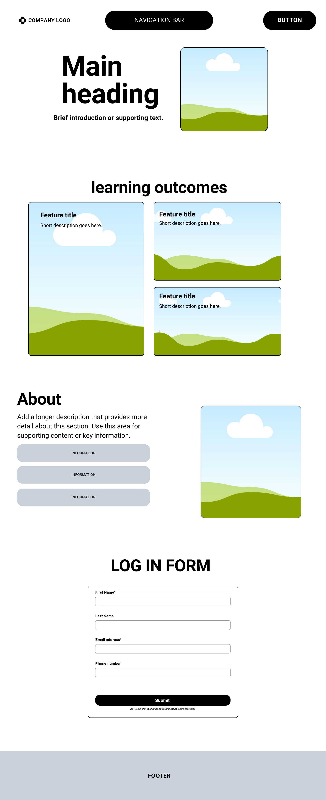
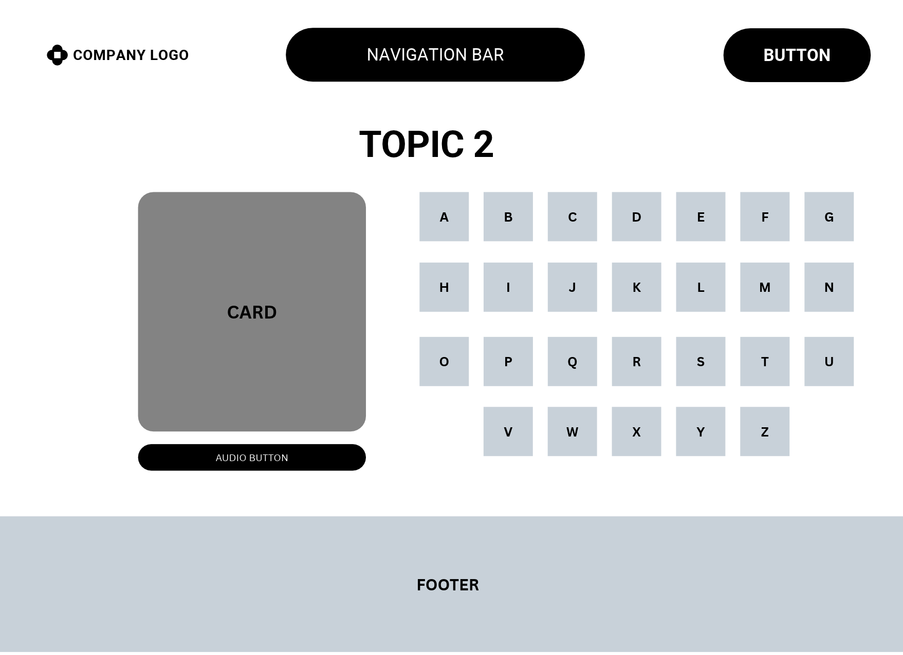
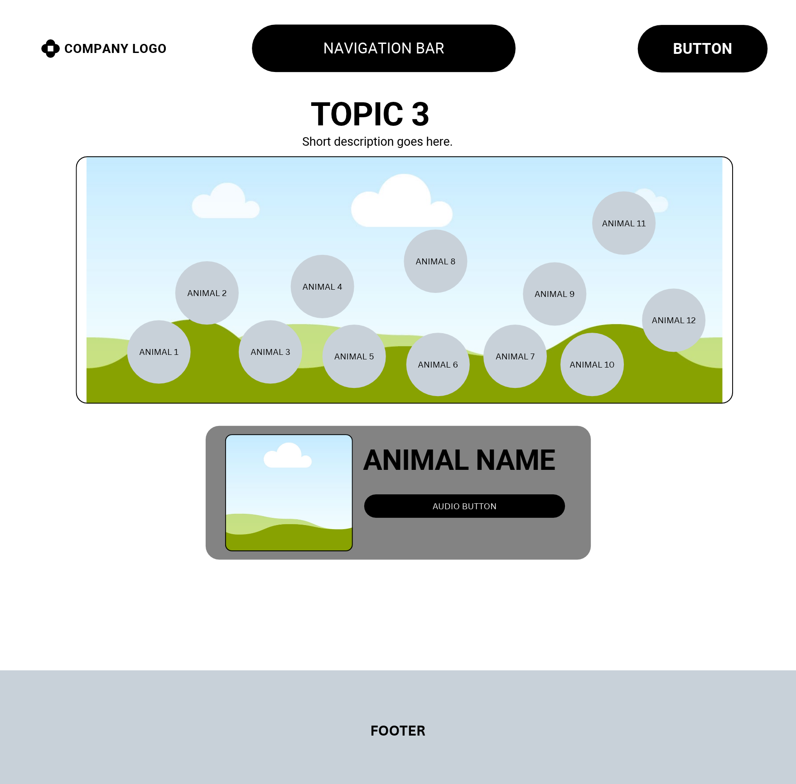
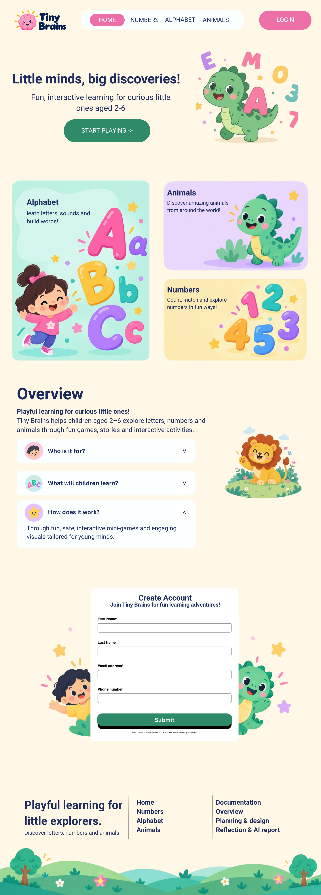
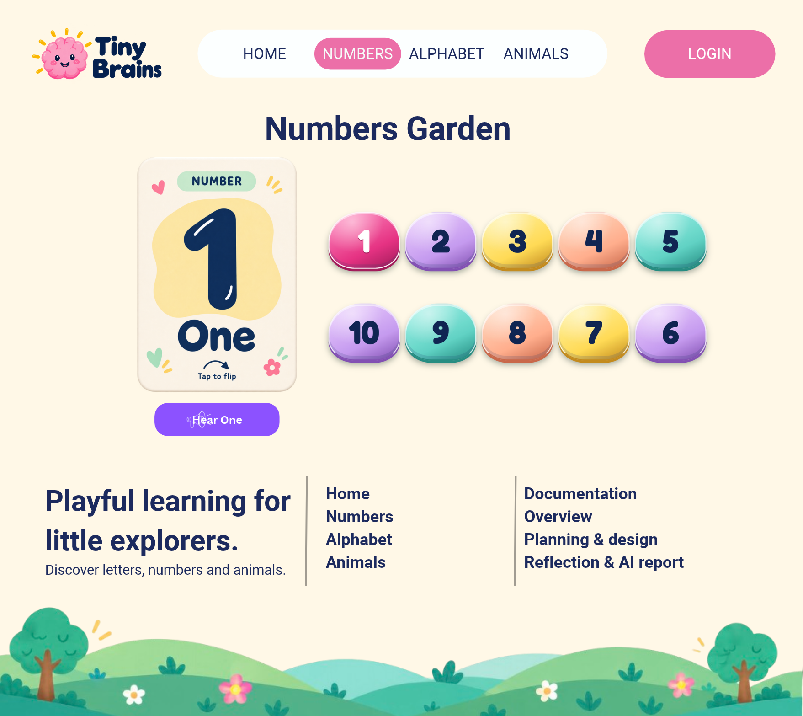
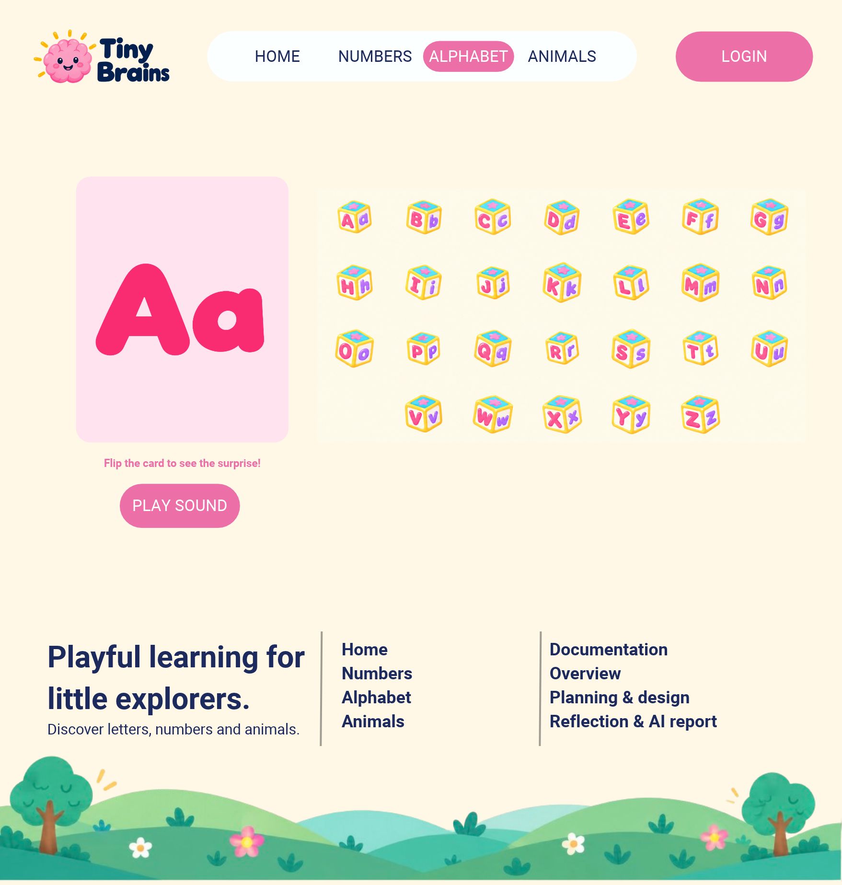
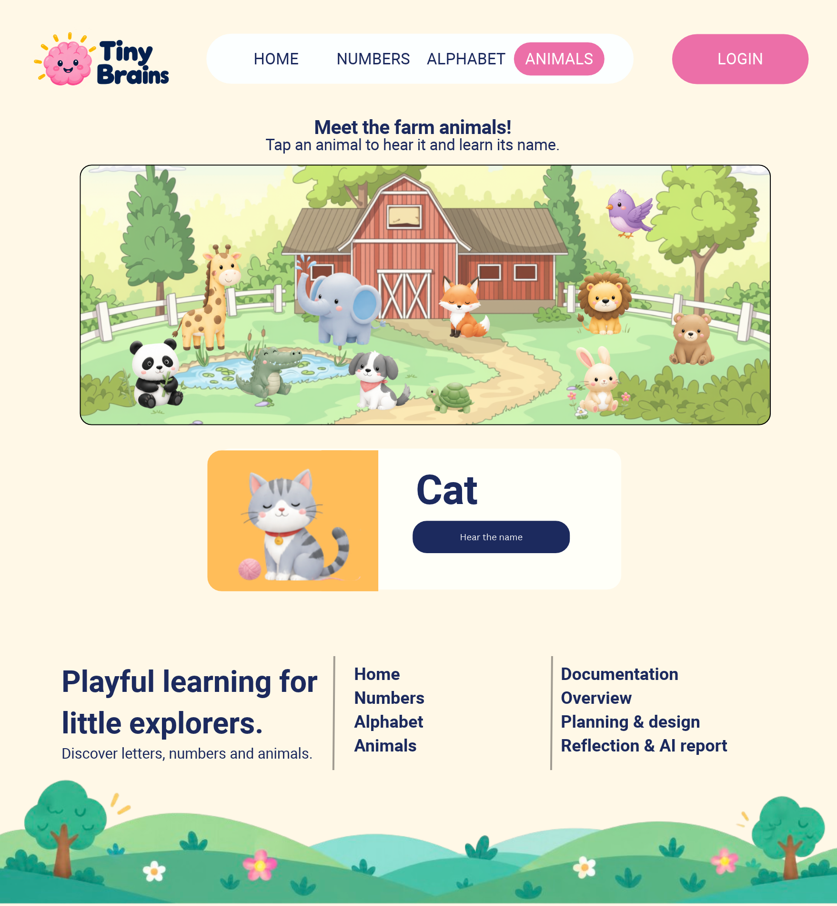

How we planned Tiny Brains and designed it for children aged 2 to 6 and for the parents who sign them up.
Wireframes
Low-fidelity layouts for all seven pages. They show where content goes before we think about colour or style.
Scroll sideways to see every page.

Homehome.html
Numbersnumbers.html

Alphabetalphabet.html

Animalsanimals.html
Mockups
High-fidelity designs with our colours, fonts and illustrations applied.
Scroll sideways to see every page.

HomeHero, learning worlds, parent sign-up

NumbersCounting cards with sound

AlphabetLetter cards with sound

AnimalsAnimal cards and the matching game
Design Decisions
Every layout choice was made with two users in mind: toddlers aged 2–6 who tap around by sight and sound, and parents who set up the account.
Big Buttons & Visual Cards
Young kids cannot read long instructions, so we used large, rounded cards and clear pictures for Alphabet, Numbers, and Animals. Everything is spaced out so small fingers can tap easily without hitting the wrong thing by mistake.
Learning by Touch and Sound
Instead of plain text pages, kids flip cards to reveal surprises or tap animals on the farm to hear real sounds and spoken names. Mixing sight, touch, and audio keeps them curious and helps them remember what they learn.
One Activity at a Time
Each topic page focuses on one clear task without pop-ups or extra menus getting in the way. Keeping screens simple stops young children from feeling overwhelmed or getting distracted.
Simple Sign-Up for Parents
The registration form sits neatly on the home page with clear labels and instant error hints so parents can quickly create an account before handing the screen to their child.
Color Palette Selection
We picked soft, calm pastel shades that feel friendly and playful without tiring kids' eyes or distracting them from learning. The mix of warm cream, mint, yellow, pink, and lilac is balanced so both boys and girls feel equally welcome.
Warm Cream#FFF8E7Main page background; softer on the eyes than bright white.Deep Navy Ink#1C2A5EHeadings, text, and borders for strong, clear contrast.Playful Green#0FA37FMain action buttons and interactive highlights.Soft Pink#FAB2CBCard frames, borders, and gentle section accents.Bright Pink#EC6FA8Fun highlights and hover states that catch attention.Calm Mint#BDEEE6Learning cards and active hover backgrounds.Sunny Yellow#FFE08ANavigation pills and warm, cheerful accents.Soft Lilac#DCC8F2Secondary cards and gentle visual variety.
Typography Selection
Kids respond better to friendly, rounded shapes than stiff, formal fonts. We chose clean, open typefaces that are easy to read for both early learners and parents.
Headings & Buttons — Fredoka
Aa Bb Cc 123
Used for titles, cards, and buttons across the site. Its rounded, bouncy letters feel casual and fun, grab a child's attention, and make individual letters easy to tell apart.
Body & Fallback Text — Fredoka / Nunito
Fun learning for curious little minds.
Used for short descriptions, hints, and parent forms. Both fonts have wide spacing and simple letter shapes so instructions stay clear and easy to scan on any screen.